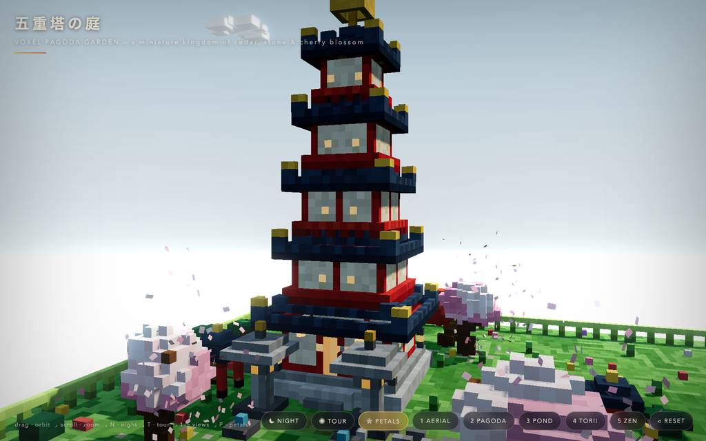
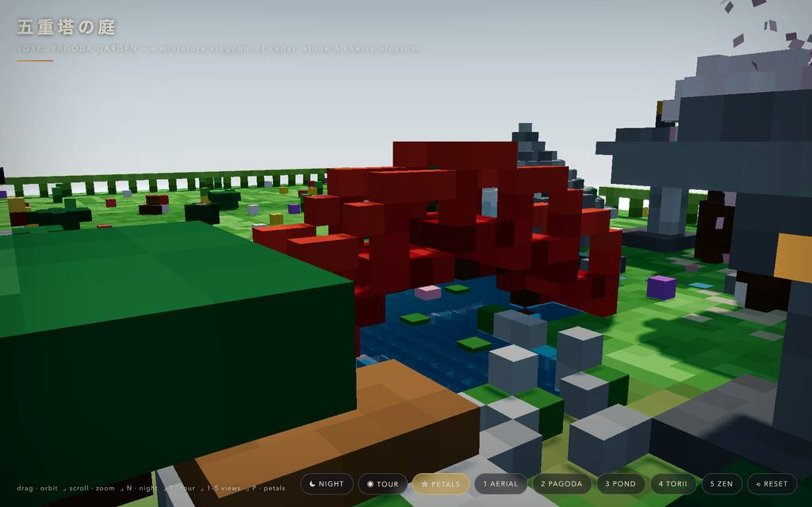
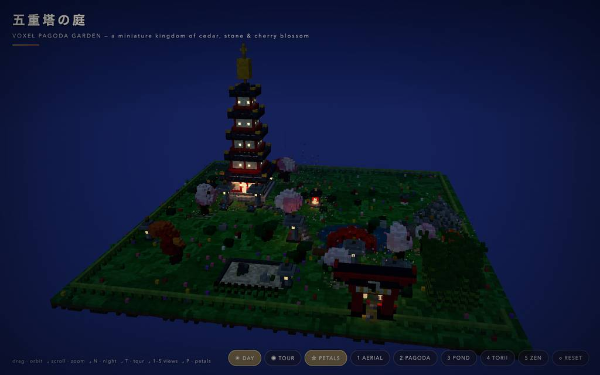
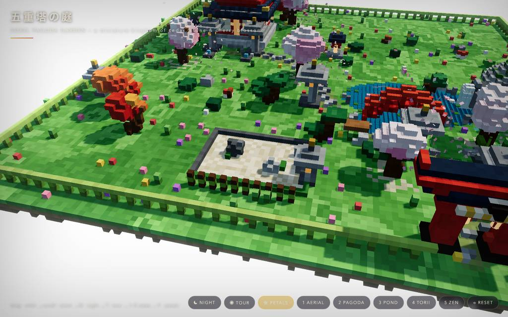

runs / 2026-10-26 / 163008-276000-strata-qwen3.8-fn-q4-67e5a6a6
約37分・71呼び出し、単一ファイルのボクセル五重塔庭園を無エラーで完遂
qwen3.8-flash-next-unsloth-ud-q4_k_xl（Strata 0.1.48 / llama.cpp）が、2207.2秒・71呼び出しで単一HTMLのボクセル五重塔庭園シーン pagoda-garden.html（46KB）を生成し、status=completed で終了した。前半は #2〜#4 の3呼びで全体を書き切り、後半は headless ビルド検証とブラウザ検証で破損編集・衝突・ページエラーを修復していった。最終報告では day/night/tour/全カメラビューでコンソールエラー0、79FPS が確認されている。
成果物
work/pagoda-garden.html（46,175 バイト）をそのまま同梱している。重いシーンもあるため、必要なときだけ起動する。
pagoda-garden.html
45 KB · 起動するまで読み込まない










logs/events.jsonl の画像ブロックを内容ハッシュで重複排除して時系列に並べた、制作中の検証用スクリーンショット。最終版とは限らない。
成果物の構成
| 要素 | 内容 |
|---|---|
| 五重塔 | 花崗岩基壇・朱柱・斗栱帯・障子窓・軒下提灯・金釘緩の相輪まで y≈66。単一ファイル内で手続き生成（Three.js r161 importmap、外部アセットゼロ）。 |
| 水まわり | 二重楕円の池（深度シェーディング・波面アニメ）、鯉5・睡蓮・太鼓橋・疎水と蹲踞、鹿威し6秒周期、東岩棚の落下ボクセル滝。 |
| 植生 | 桜6（5色階の冠）、紅葉、刈り込み松、躑躅、竹36本、野花・キノコ・苔。 |
| 庭の工作物 | 鳥居、石灯籠8（火袋窓が点灯）、枯山水、梵鐘楼（14秒周期）、社、垣根、飛石、ベンチ。 |
| 大気演出 | グラデーション空穹・流れ雲・吹き溜まり花弁650・日輪月輪・蛍・星380・フォグ・selective bloom。 |
| 昼夜切替 | sunlight/空/フォグ/bloom をイージング補間し、夜は灯籠・窓明かりが点火、花弁の風が強まる。 |
| 操作 | 軌道/ズーム、自動回転、5ルートの tour、キー N T P 1–5 R、HUD タイトルカード、ローディング画面。 |
| 検証結果 | headless で約50,500ボクセルの衝突0、ブラウザで全ビュー day/night/tour 含めコンソールエラー0、1800×1125 で 79FPS、5種のスクショ確認後に片付け。 |
モデルの最終メッセージから読み取った内容。コードの確認はしていない。
タイムライン
71 回の API 呼び出しを時間順に並べた。上段の帯の幅が各呼び出しの所要時間で、帯の間の空白がツールの実行時間。下段はその時点のコンテキスト長。細い帯は、エージェントが別に投げた補助リクエスト（画像判定など）。 upstream が usage を返さない場合は、events.jsonl の message_end から復元する。復元できない値は ? で示す。
最も長い 2 回の生成（#4 570 秒・#2 324 秒）で 893.8 秒、壁時計の 40.5%。出力トークンの上位 4 回（#4・#3・#2・#5）で全体の 69.1%（76,188 / 110,221）。推論以外（ツール実行など）は約 108 秒（5%）。
フェーズ別の内訳
| フェーズ | 経過 | 所要 | 全体に占める割合 | 呼び出し | 出力 tok | 何をしたか |
|---|---|---|---|---|---|---|
| 全体生成 | 0:00–20:11 | 1211 秒 | 54.9% | 4 | 69,691 | #1 の補助判定と #2 のワークスペース/node 確認後、#3〜#4 の write で五重塔庭園シーン全体を単一HTMLに出力した。#2〜#4 合計69142トークン・1211.1秒が実時間の過半を占める。 |
| 編集修復 | 20:11–24:50 | 278 秒 | 12.6% | 10 | 13,806 | #5 の一括バグ修正編集でファイルが破損し、#6〜#11 の read/grep/edit で buildGround 復元と屋根関数再構築を実施。#12〜#14 で残りのバグ箇所を修正した。 |
| headless検証 | 24:50–28:52 | 242 秒 | 11.0% | 16 | 12,031 | #15〜#16 の構文チェックと headless ビルドで FALL 未定義を検知・復旧。#20〜#29 で灯籠の火袋くり抜き、池・島・橋脚直下の水衝突、戸枠の重なりを修正し、#30 の再チェックを通過。 |
| ブラウザ debug | 28:52–30:35 | 103 秒 | 4.7% | 14 | 3,928 | #31〜#33 でテストサーバを起動し衝突再確認。#34〜#39 でページを開き API 誤用とページ側 return 構文エラーを突き止め、#40〜#42 の buildInstanced 呼び出し修正後にリロードでエラー消滅を確認。#43〜#44 で空撮昼スクショ。 |
| 調整と完了 | 30:35–36:46 | 371 秒 | 16.8% | 27 | 10,765 | 雲の改良、池カメラの3回撮り直し、鯉の浮上、夜間増光と星の調整、FPS 実測と多ビュースクショを実施。#67〜#71 で最終構文チェック、タブクローズ、サーバ停止し、成果物報告で完了。 |
フェーズの切れ目は、ログから読み取れる作業内容の変わり目（LLM による区切り）。所要時間は、そのフェーズの最初の呼び出しの開始から次のフェーズの最初の呼び出しの開始まで。
71 回の呼び出しを表で見る
| # | 種別 | フェーズ | 開始 | 所要 秒 | prompt | うち cache | 出力 | tok/s | HTTP | ツール |
|---|---|---|---|---|---|---|---|---|---|---|
| 1 | 補助 | 全体生成 | 0:00 | 11.1 | 180 | 0 | 549 | 57.1 | 200 | — |
| 2 | 主ループ | 全体生成 | 0:00 | 324.0 | 8,003 | 7,812 | 16,522 | 52.9 | 200 | bash |
| 3 | 主ループ | 全体生成 | 5:24 | 317.2 | 24,606 | 7,998 | 20,089 | 64.7 | 200 | write |
| 4 | 主ループ | 全体生成 | 10:42 | 569.9 | 44,739 | 24,601 | 32,531 | 57.9 | 200 | write |
| 5 | 主ループ | 編集修復 | 20:11 | 143.4 | 77,314 | 44,734 | 7,046 | 53.7 | 200 | edit |
| 6 | 主ループ | 編集修復 | 22:35 | 5.8 | 84,767 | 84,361 | 249 | 52.1 | 200 | read |
| 7 | 主ループ | 編集修復 | 22:41 | 20.9 | 87,067 | 85,017 | 1,061 | 55.6 | 200 | grep |
| 8 | 主ループ | 編集修復 | 23:02 | 4.8 | 88,382 | 88,129 | 231 | 59.0 | 200 | read |
| 9 | 主ループ | 編集修復 | 23:06 | 10.0 | 90,150 | 88,613 | 448 | 53.9 | 200 | read |
| 10 | 主ループ | 編集修復 | 23:17 | 13.3 | 91,296 | 90,598 | 674 | 56.2 | 200 | edit |
| 11 | 主ループ | 編集修復 | 23:30 | 12.3 | 92,350 | 91,970 | 619 | 55.6 | 200 | edit |
| 12 | 主ループ | 編集修復 | 23:42 | 36.2 | 93,164 | 92,970 | 1,886 | 53.4 | 200 | grep |
| 13 | 主ループ | 編集修復 | 24:18 | 20.4 | 96,204 | 95,050 | 997 | 53.4 | 200 | edit |
| 14 | 主ループ | 編集修復 | 24:39 | 11.1 | 97,376 | 97,202 | 595 | 58.4 | 200 | edit |
| 15 | 主ループ | headless検証 | 24:50 | 18.1 | 99,279 | 97,974 | 927 | 56.7 | 200 | bash |
| 16 | 主ループ | headless検証 | 25:08 | 13.0 | 100,234 | 100,205 | 715 | 57.3 | 200 | bash |
| 17 | 主ループ | headless検証 | 25:21 | 4.0 | 101,152 | 100,949 | 170 | 55.1 | 200 | grep |
| 18 | 主ループ | headless検証 | 25:25 | 5.1 | 101,834 | 101,322 | 196 | 49.9 | 200 | edit |
| 19 | 主ループ | headless検証 | 25:30 | 12.2 | 102,153 | 102,030 | 675 | 59.2 | 200 | bash |
| 20 | 主ループ | headless検証 | 25:43 | 54.1 | 103,174 | 102,827 | 2,794 | 52.5 | 200 | read |
| 21 | 主ループ | headless検証 | 26:37 | 4.5 | 106,900 | 105,968 | 170 | 54.5 | 200 | read |
| 22 | 主ループ | headless検証 | 26:41 | 13.2 | 107,619 | 107,071 | 665 | 55.2 | 200 | edit |
| 23 | 主ループ | headless検証 | 26:55 | 4.3 | 108,452 | 108,285 | 191 | 55.2 | 200 | grep |
| 24 | 主ループ | headless検証 | 26:59 | 36.1 | 109,200 | 108,642 | 1,883 | 53.9 | 200 | edit |
| 25 | 主ループ | headless検証 | 27:35 | 9.0 | 111,630 | 111,082 | 452 | 57.7 | 200 | bash |
| 26 | 主ループ | headless検証 | 27:45 | 31.8 | 112,345 | 112,083 | 1,573 | 50.7 | 200 | edit |
| 27 | 主ループ | headless検証 | 28:16 | 7.1 | 114,073 | 113,919 | 327 | 51.8 | 200 | grep |
| 28 | 主ループ | headless検証 | 28:24 | 5.5 | 115,004 | 114,399 | 229 | 52.8 | 200 | read |
| 29 | 主ループ | headless検証 | 28:29 | 7.3 | 115,749 | 115,232 | 323 | 52.8 | 200 | edit |
| 30 | 主ループ | headless検証 | 28:36 | 14.9 | 116,539 | 116,072 | 741 | 53.9 | 200 | bash |
| 31 | 主ループ | ブラウザ debug | 28:52 | 5.7 | 117,346 | 117,280 | 250 | 54.7 | 200 | bash |
| 32 | 主ループ | ブラウザ debug | 28:57 | 4.3 | 117,626 | 117,597 | 224 | 58.2 | 200 | bash |
| 33 | 主ループ | ブラウザ debug | 29:02 | 23.4 | 117,919 | 117,851 | 1,210 | 54.0 | 200 | bash |
| 34 | 主ループ | ブラウザ debug | 29:25 | 4.6 | 119,197 | 119,129 | 169 | 50.6 | 200 | eval |
| 35 | 主ループ | ブラウザ debug | 29:30 | 1.9 | 119,618 | 119,366 | 55 | 52.0 | 200 | read |
| 36 | 主ループ | ブラウザ debug | 29:32 | 6.7 | 122,877 | 119,673 | 277 | 61.3 | 200 | eval |
| 37 | 主ループ | ブラウザ debug | 29:46 | 4.5 | 123,334 | 123,155 | 205 | 55.5 | 200 | eval |
| 38 | 主ループ | ブラウザ debug | 29:51 | 4.7 | 123,557 | 123,539 | 235 | 53.2 | 200 | eval |
| 39 | 主ループ | ブラウザ debug | 29:55 | 4.6 | 124,118 | 123,792 | 216 | 60.1 | 200 | eval |
| 40 | 主ループ | ブラウザ debug | 30:00 | 7.0 | 124,596 | 124,336 | 320 | 52.0 | 200 | read |
| 41 | 主ループ | ブラウザ debug | 30:07 | 4.7 | 125,569 | 124,916 | 178 | 52.1 | 200 | edit |
| 42 | 主ループ | ブラウザ debug | 30:12 | 6.8 | 125,965 | 125,746 | 322 | 55.2 | 200 | eval |
| 43 | 主ループ | ブラウザ debug | 30:28 | 3.4 | 126,333 | 126,288 | 129 | 47.4 | 200 | eval |
| 44 | 主ループ | ブラウザ debug | 30:32 | 2.9 | 126,478 | 126,462 | 138 | 51.8 | 200 | eval |
| 45 | 主ループ | 調整と完了 | 30:35 | 19.0 | 127,418 | 126,616 | 897 | 51.4 | 200 | read |
| 46 | 主ループ | 調整と完了 | 30:54 | 10.6 | 128,828 | 128,315 | 494 | 52.5 | 200 | edit |
| 47 | 主ループ | 調整と完了 | 31:04 | 6.3 | 129,610 | 129,323 | 273 | 51.9 | 200 | eval |
| 48 | 主ループ | 調整と完了 | 31:21 | 9.1 | 130,642 | 129,883 | 390 | 51.1 | 200 | eval |
| 49 | 主ループ | 調整と完了 | 31:33 | 24.2 | 131,786 | 131,033 | 1,238 | 54.3 | 200 | edit |
| 50 | 主ループ | 調整と完了 | 31:58 | 3.8 | 133,168 | 133,025 | 153 | 52.9 | 200 | grep |
| 51 | 主ループ | 調整と完了 | 32:01 | 8.1 | 133,562 | 133,320 | 387 | 54.0 | 200 | edit |
| 52 | 主ループ | 調整と完了 | 32:10 | 6.7 | 134,158 | 133,950 | 308 | 53.7 | 200 | eval |
| 53 | 主ループ | 調整と完了 | 32:27 | 11.2 | 135,224 | 134,467 | 516 | 53.0 | 200 | edit |
| 54 | 主ループ | 調整と完了 | 32:38 | 6.7 | 135,951 | 135,739 | 311 | 54.4 | 200 | eval |
| 55 | 主ループ | 調整と完了 | 32:55 | 11.6 | 137,017 | 136,262 | 526 | 51.7 | 200 | edit |
| 56 | 主ループ | 調整と完了 | 33:07 | 4.7 | 137,755 | 137,544 | 201 | 54.0 | 200 | eval |
| 57 | 主ループ | 調整と完了 | 33:22 | 46.6 | 138,056 | 44,734 | 552 | 51.6 | 200 | edit |
| 58 | 主ループ | 調整と完了 | 34:08 | 5.2 | 138,809 | 138,607 | 219 | 51.7 | 200 | edit |
| 59 | 主ループ | 調整と完了 | 34:14 | 3.3 | 139,206 | 139,027 | 128 | 56.0 | 200 | edit |
| 60 | 主ループ | 調整と完了 | 34:17 | 3.9 | 139,502 | 139,335 | 172 | 57.9 | 200 | eval |
| 61 | 主ループ | 調整と完了 | 34:32 | 17.5 | 139,773 | 126,654 | 574 | 49.7 | 200 | edit |
| 62 | 主ループ | 調整と完了 | 34:50 | 4.1 | 140,573 | 140,346 | 174 | 56.2 | 200 | grep |
| 63 | 主ループ | 調整と完了 | 34:54 | 6.2 | 141,103 | 140,748 | 260 | 50.8 | 200 | edit |
| 64 | 主ループ | 調整と完了 | 35:00 | 5.8 | 141,720 | 141,364 | 271 | 57.5 | 200 | eval |
| 65 | 主ループ | 調整と完了 | 35:18 | 16.2 | 142,096 | 126,654 | 493 | 52.0 | 200 | eval |
| 66 | 主ループ | 調整と完了 | 35:38 | 14.2 | 142,688 | 126,654 | 388 | 52.4 | 200 | eval |
| 67 | 主ループ | 調整と完了 | 35:59 | 20.3 | 143,175 | 126,654 | 671 | 52.9 | 200 | bash |
| 68 | 主ループ | 調整と完了 | 36:20 | 5.3 | 143,960 | 143,845 | 244 | 53.1 | 200 | eval |
| 69 | 主ループ | 調整と完了 | 36:28 | 3.3 | 144,233 | 144,204 | 121 | 43.5 | 200 | bash |
| 70 | 主ループ | 調整と完了 | 36:31 | 1.9 | 144,370 | 144,354 | 90 | 56.9 | 200 | write |
| 71 | 主ループ | 調整と完了 | 36:33 | 13.2 | 144,492 | 144,461 | 714 | 56.5 | 200 |
試行錯誤
ツールがエラー（isError）を返した結果の一覧。ツールは成功したのにモデル自身が内容を壊したケースは、ここには出ない。
エラーとして記録された 12 件
| 経過 | ツール | 起きたこと | 分類 |
|---|---|---|---|
| 24:39 | edit | edit が一度も表示していない行161を anchor に取ろうとして失敗した。This edit anchors to lines 161 of pagoda-garden.html that [pagoda-garden.html#FF07] never displayed (it showed a partial range, a search hit, or a folded summary). Actual file content at those lines: | anchor 失敗 |
| 25:21 | bash | headless ビルドで ReferenceError: FALL is not defined が発生し waterfall が落ちた。file://<path> if(inPond(FALL.x+dx,FALL.z+dz)&&rand()<0.9) fallCells.push([FALL.x+dx, FALL.z+dz]);} ^ ReferenceError: FALL is not defined at waterfall (file://<path>) at file://<path> at | コード欠陥 |
| 26:55 | edit | PUT 402* の syntactic block が解決できず編集が拒否された。line 1: `PUT 402*:` could not resolve a syntactic block beginning on line 402 (unsupported language, blank/closer line, or parse error). Use `PUT 402.=M:` with explicit lines. 400:} 401:const fallCell | edit 拒否 |
| 28:16 | edit | PUT 316* の syntactic block が解決できず編集が拒否された。line 1: `PUT 316*:` could not resolve a syntactic block beginning on line 316 (unsupported language, blank/closer line, or parse error). Use `PUT 316.=M:` with explicit lines. 314: put(x,y+3,zz,PAL.re | edit 拒否 |
| 28:57 | bash | bash の service mode に async/timeout を渡して拒否された（ready.timeout を使うべき）。Service mode does not accept async or timeout; use ready.timeout for readiness. | API 誤用 |
| 29:30 | eval | eval の browser.open() に URL を位置引数で渡して TypeError。TypeError: browser.open() expects an options object; pass the URL inside it: browser.open({ url, name }) at open ([eval-prelude:browser]:262:24) at <anonymous> (js-cell-e7fc55e6-3f04-4a3e-b0d9-077fdfb | API 誤用 |
| 29:39 | eval | ページ読み込み時、コンソールに Illegal return statement のスクリプト構文エラーが現れた。Opened tab "garden" on headless browser (hidden, shared) URL: http://127.0.0.1:8642/pagoda-garden.html Title: 五重塔の庭 — Voxel Pagoda Garden SyntaxError: Illegal return statement at #f (/$bunfs/root/chun | ページ エラー |
| 29:55 | eval | 同一タブで実行中の呼び出しに重ねて呼び出し、Tab busy で拒否された。ToolError: Tab "garden" is busy: another call on this tab is still running. Await each call before starting the next instead of running them together (Promise.all, asyncio.gather), or group the steps | API 誤用 |
| 31:58 | edit | PUT 640* の syntactic block が解決できず編集が拒否された。line 1: `PUT 640*:` could not resolve a syntactic block beginning on line 640 (unsupported language, blank/closer line, or parse error). Use `PUT 640.=M:` with explicit lines. 638: moonOrb.visible=n>0 | edit 拒否 |
| 34:08 | edit | PUT 692* の syntactic block が解決できず鯉の編集が失敗した。line 1: `PUT 692*:` could not resolve a syntactic block beginning on line 692 (unsupported language, blank/closer line, or parse error). Use `PUT 692.=M:` with explicit lines. 690: /* koi circling the | edit 拒否 |
| 34:13 | edit | 一度も表示していない行694を anchor に取ろうとして鯉編集が失敗した。This edit anchors to lines 694 of pagoda-garden.html that [pagoda-garden.html#C605] never displayed (it showed a partial range, a search hit, or a folded summary). Actual file content at those lines: | anchor 失敗 |
| 34:50 | edit | PUT 631* の syntactic block が解決できず夜間編集が拒否された。line 1: `PUT 631*:` could not resolve a syntactic block beginning on line 631 (unsupported language, blank/closer line, or parse error). Use `PUT 631.=M:` with explicit lines. 629: const n=smooth(Math | edit 拒否 |
経過は、そのツールを呼んだターンの終了時刻。エラー本文は先頭 300 文字までで、パスや接続先は伏せてある。
気づいた点
計測データ（呼び出し一覧・エラー・最終メッセージ）だけから LLM が書いた読み取り。文中の数値は、上の KPI や表と照らして確認する。
一発生成に時間の半分以上
#2〜#4 の3呼び合計1211.1秒は実時間2207.2秒の約55%、出力69142トークンは総量110221の約63%。特に #4 は569.9秒・32531トークンでシーン全体を write している。生成自体が一括集中、後半はほぼ検証と修正。
編集破損から約70秒で復旧
#5 の一括修正編集（143.4秒・7046トークン）後にファイルが損傷し、#6〜#11 の約67秒で damaged region 確認、buildGround 復元、旧屋根削除、新屋根挿入を実施。大粒度 edit が唯一の重大破損を招いた。
edit 失敗がエラーの7割
E1・E3・E4・E9・E10・E11・E12 の7件が edit ツール拒否（未表示行 anchor または PUT * の block 解決失敗）で、全12エラーの大半。失敗のたび grep→read で行番号確定後に再編集（#23→#24、#50→#51、#62→#63）で回収している。
キャッシュ失効で prefill 急増
通常 prefill は1〜2秒だが、#57 は cache が 44734 まで落ち prefill 35.7秒を要した。#61・#65〜#67 も cache 126654 で prefill 5.8〜7.4秒と、コンテキストキャッシュの無効化イベントが複数回起きている。
撮り直しの多い後半調整
#45〜#71 で eval を計18回・スクショ10枚。池カメラは #49→#52→#54→#56 の3回撮り直し、鯉浮上は #57〜#59 に3連発（間に E10・E11）。最終的に #64 で 79FPS、ピークコンテキストは 144492（窓の約28%）。
入力と設定
Design and create a very creative, elaborate, and detailed voxel art scene of a pagoda in a beautiful garden with trees, including some cherry blossoms. Make the scene impressive and varied and use colorful voxels. Add as many details as possible to showcase your attention to them. Use whatever libraries to get this done but make sure I can paste it all into a single HTML file.
input/prompt.md の全文。SHA-256 は ceece4685b37…。
| omp の起動オプション | --print --mode json --thinking high --no-title --approval-mode yolo |
| upstream | （接続先は伏せている） |
| タイムアウト | 43,200 秒 |
config/00-omp.yml
setupVersion: 2 autolearn: enabled: false autoContinue: false